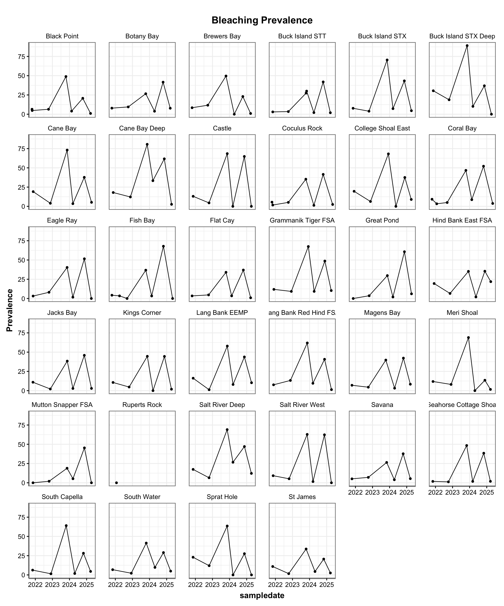
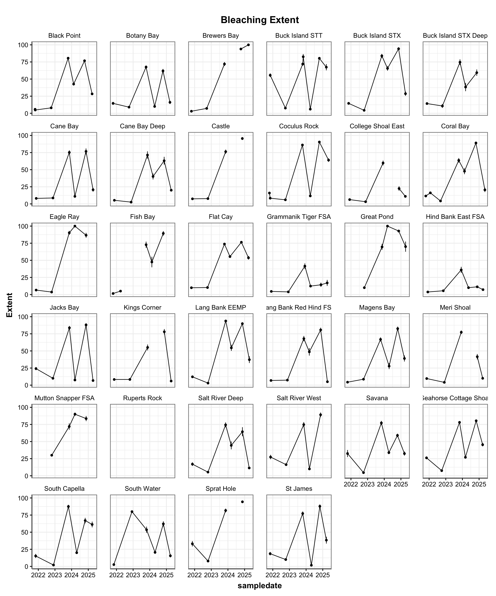

General Figures to Visualize Bleaching in TCRMP plots
Nicole Krampitz
September 27, 2025


I think this is probably already in the tcrmp report


---
title: "Bleaching Background"
author: "Nicole Krampitz"
subtitle: "General Figures to Visualize Bleaching in TCRMP plots"
date: "`r format(Sys.time(), '%d %B %Y')`"
format:
html:
theme: lumen
code-fold: TRUE
code-tools: TRUE
title-block-banner: true
title-block-style: default
warning: FALSE
echo: TRUE
message: FALSE
---
```{r, add libraries and data if needed, include = FALSE}
library(tidyverse)
library(tcrmp)
### data ####
ch_colonies <- read.csv("../data/TCRMP_coralhealth_colonies_master_May2002_May2025.csv")
ch_condition <- read.csv("../data/TCRMP_coralhealth_condition_master_May2002_May2025.csv")
ch_interaction <- read.csv("../data/TCRMP_coralhealth_colonies_master_May2002_May2025.csv")
ch_sites <- read.csv("../data/TCRMP_coralhealth_colonies_master_May2002_May2025.csv") %>%
mutate(sampledate = as.Date(sampledate))
benthic_cover <- read.csv("../data/TCRMP_Master_BenthicCover_BenthicData.csv")
## scripts ##
source("../scripts/theme_publication.R")
```
# Simple Metrics: Site-Level Prevalence/Extent
```{r, echo = FALSE, fig.asp = 1.2, fig.width = 12, fig.cap = "Total bleaching only, no paling"}
##So start with colony condition, and just keep the ones with BL
tmp <- ch_condition %>%
filter(category == "Bleaching") %>%
filter(code == "BL") %>% #Can comment this out if just want all types of bleaching %>%
full_join(., ch_sites)
summary <- tmp %>%
group_by(location, period, surveyyear, sampledate) %>%
summarise(
Prevalence = 100* sum(!is.na(extent))/length(location),
Extent = mean(extent, na.rm = TRUE),
Ex_SEM = sd(extent, na.rm=TRUE)/ sqrt(length(extent)))
###Prevalence at each site since 2020
summary %>%
filter(surveyyear > 2020) %>%
ggplot(aes(x=sampledate, y=Prevalence, group = location)) +
geom_point() +
scale_x_date(date_labels = "%Y") +
geom_line()+
theme_Publication()+
facet_wrap(~location) +
ggtitle("Bleaching Prevalence")
###Extent at each site since 2020
##This would be of those corals that are bleached, what is the average % that the coral is fully bleached
summary %>%
filter(surveyyear > 2020) %>%
ggplot(aes(x=sampledate, y=Extent)) +
geom_point() +
geom_line()+
geom_errorbar(aes(ymin=Extent - Ex_SEM, ymax= Extent + Ex_SEM)) +
scale_x_date(date_labels = "%Y") +
facet_wrap(~location) +
theme_Publication()+
ggtitle("Bleaching Extent")
```
## Bleaching Events in Historical Context by Sites
I think this is probably already in the tcrmp report
```{r, BL events compared, echo= FALSE, fig.width = 12, fig.asp=1.1, fig.cap = "Comparing biggest bleaching events, total bleaching only"}
##Need summarized bleaching prevalence (ande extent prevalence) at each site in those years and one time point
health <- summary %>%
filter(surveyyear %in% c(2005, 2019, 2023, 2024)) %>%
filter(period != "SCTLD") %>%
filter(!(period == "Annual" & surveyyear == 2005)) %>%
filter(!(period == "PeakBL" & surveyyear == 2019)) %>%
filter(!(period == "PBL" & surveyyear == 2024)) %>%
ungroup() %>%
mutate(
surveyyear = as.factor(surveyyear)
)
health <- health %>% pivot_longer(cols=c(Prevalence, Extent), names_to = "DataType", values_to = "Avg")
##Order things correctly... this is annoying
health$surveyyear <- factor(health$surveyyear, levels = c("2005", "2019", "2023", "2024"))
health$DataType <- factor(health$DataType, levels = c("Prevalence", "Extent"))
health$location <- factor(health$location, levels = sort(unique(health$location))) #alphabetically
##graph
health %>% mutate(Avg = Avg/100) %>%
ggplot(aes(x=Avg, y =fct_rev(factor(location)), color = as.factor(surveyyear))) +
geom_line(aes(group = location), linetype = "solid")+
geom_point(size =5) +
labs(x = "",
y = "Site",
color = "Sample Year")+
theme_Publication()+
facet_grid(~DataType) +
theme(
strip.background = element_rect(fill="white", color="white", size=1.5, linetype="solid")) +
scale_color_manual(values=c("grey30","grey78", 'pink', 'orchid4')) +
scale_x_continuous(labels = scales::percent)
```
## Bleaching and Paling Preavlences
```{r, adding in paling, fig.cap = "Paling line is anything that was not total bleaching, this is prevalence. Keep in mind, a coral could be both paled and bleached..." , fig.asp = 1.1, fig.width =9, echo= FALSE}
## Create the Paling and Bleaching Dataset
pale <- ch_condition %>%
filter(category == "Bleaching") %>%
full_join(., ch_sites) %>%
filter(!(colony_id == "101029BWRT6012709" & extent ==0)) %>% #this lone coral has a messed up entry
pivot_wider(id_cols = c(colony_id:category, sampledate), names_from = code, values_from = extent) %>%
mutate(across(c(SP:VP), ~ replace(., is.na(.), 0))) %>% ##Change NAs to 0s to add properly without it giving NAs
mutate(PAL = P + VP + SP) %>%
group_by(across(c(colony_id:category, sampledate))) %>%
summarize(BL = sum(BL),
PAL = sum(PAL))
##Calculate Prevalence for graphing
tmp2 <- pale %>% full_join(., ch_sites) %>%
pivot_longer(cols = c(BL, PAL), names_to = "bl_category", values_to = "extent")%>%
group_by(location, period, surveyyear, sampledate, bl_category, transect) %>%
mutate(across(c(extent), ~ ifelse(. == 0, NA, .))) %>% ##Change 0s back to NAs to calculate prevalence
summarise(
Prev = 100* sum(!is.na(extent))/length(location)) %>%
group_by(location, period, surveyyear, sampledate, bl_category) %>% #across transects
summarise(
Preva = mean(Prev)) %>%
group_by(period, surveyyear, bl_category) %>% #across sites
summarise(
Prevalence = mean(Preva),
SEM = sd(Preva)/sqrt(length(Preva))) %>%
mutate(Period.Year = paste0(surveyyear, " ", period))
##Order years/periods correctly
sampling_order <- c("2001 Annual", "2002 Annual", "2003 Annual", "2004 Annual",
"2005 Annual", "2005 PeakBL", "2006 Annual", "2007 Annual",
"2008 Annual", "2009 Annual", "2010 Annual", "2011 Annual",
"2012 Annual", "2013 Annual", "2014 Annual", "2015 Annual",
"2016 Annual", "2017 Annual", "2018 Annual", "2019 Annual",
"2020 PostBL", "2020 SCTLD", "2020 Annual", "2021 Annual",
"2022 Annual", "2023 Annual", "2024 PBL", "2024 Annual", "2025 PBL")
Pal.Bl <- tmp2 %>% filter(Period.Year %in% sampling_order)
Pal.Bl$Period.Year <- factor(Pal.Bl$Period.Year, levels = sampling_order)
## Final Graph Output
Pal.Bl %>% na.omit()%>%
ggplot(aes(x=Period.Year, y=Prevalence, color = bl_category, linetype = bl_category, group = bl_category)) +
geom_point() +
geom_line() +
ylim (0, NA) +
geom_errorbar(aes(ymin=Prevalence - SEM, ymax=Prevalence + SEM), linetype = "solid", width=0.1) +
scale_x_discrete(limits = levels(Pal.Bl$Period.Year)) +
theme_Publication()+
theme(
axis.text.x = element_text(angle =90)
) +
labs(y = "Prevalence (%)",
x = "Sampling Period",
linetype = "Bleaching Type")+
scale_color_manual(values = c("black", "grey60")) +
scale_linetype_manual(values= c("solid", "dotdash"), labels = c("Bleaching", "Paling")) +
guides(color = "none")
```